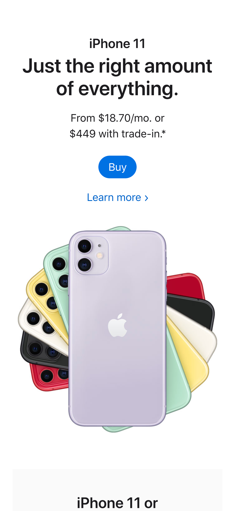
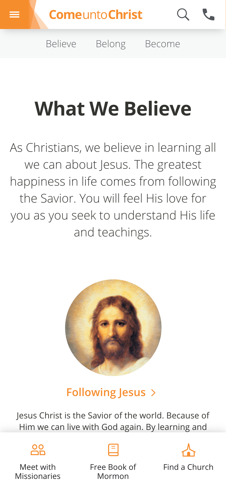
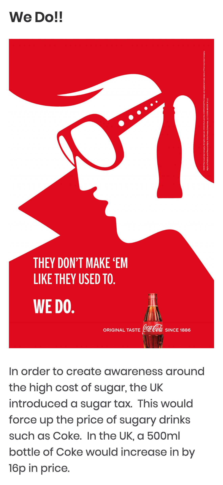

White Space and Clean Design
Apple.com Iphone 11 Ad
https://www.apple.com/iphone/ I feel this ad for the Iphone 11 on Apple's website utilizes clean design and white space very well. It's not overcrowded with information or elements that aren't needed. You have exactly what you need and if you want more information you can select the "Learn more" option.
PARC: Repetition
Church of Jesus Christ of Latter-Day Saints
https://www.comeuntochrist.org/beliefs I feel this page utilizes elements of repetition well. The most notable repeated element is the color orange. It's used in the title of the webpage, the menu bar, for section links, and the icons at the bottom of the page. I feel it really helps pull the whole page together and helps it stay united.
PARC: Contrast
Coca Cola Advertising on Design Your Way's Website
https://www.designyourway.net/blog/inspiration/coca-cola-advertising/ I feel this webpage utilized elements of contrast well. The red and white colors really contrast well and form a very unique and appealing design. I also like how they have the same contrasting colors in their logo.